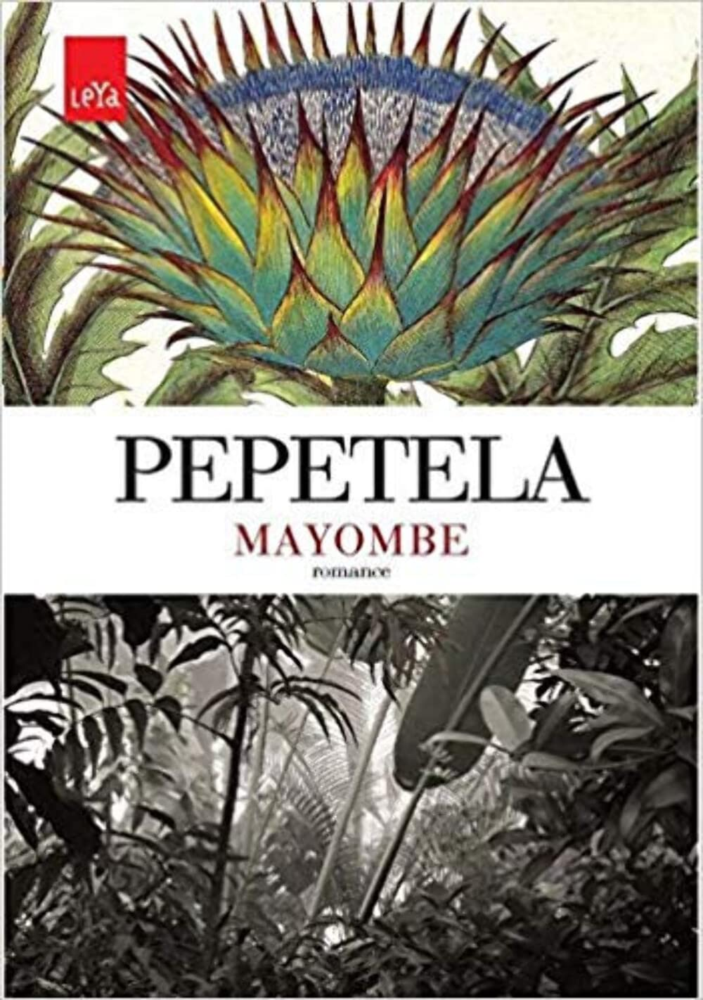
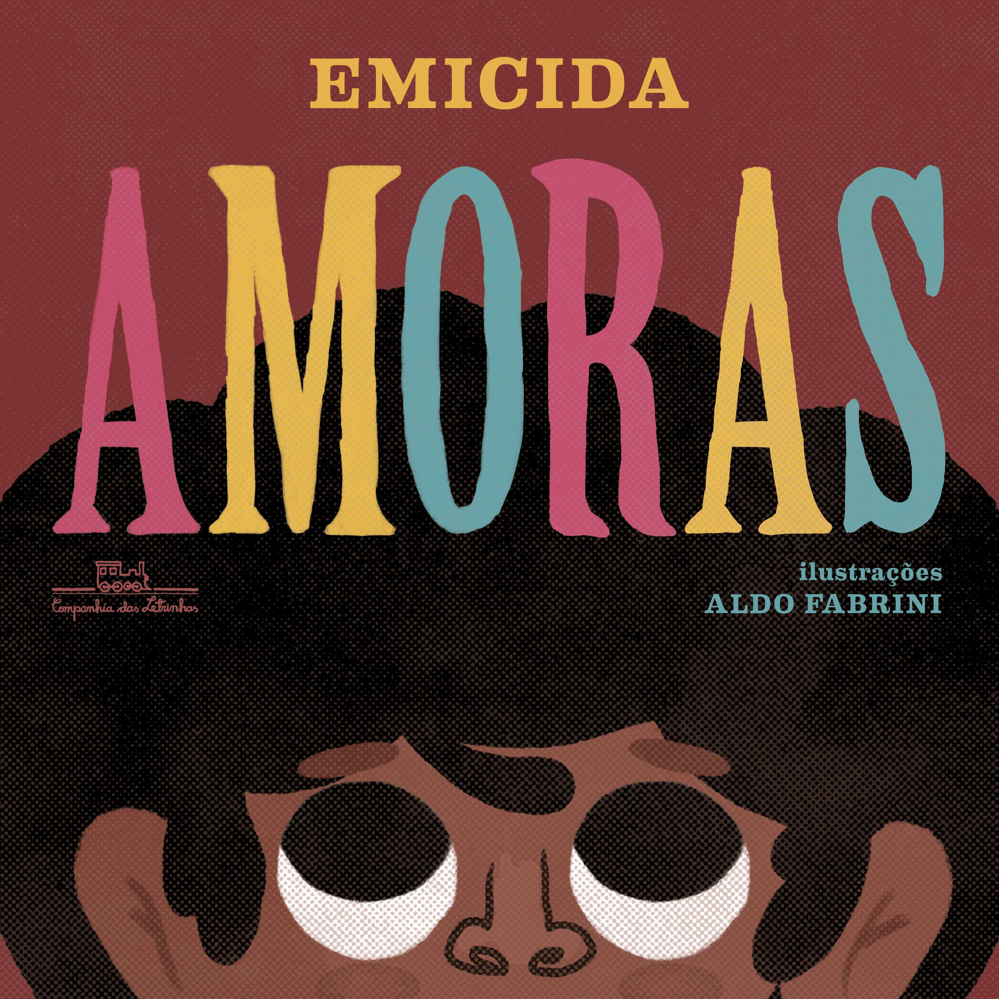

01
História
A presença negra no Brasil é feita de conhecimentos, culturas, lutas, criações e transformações que vão muito além da escravidão.
Histórias, identidades e conquistas de pessoas negras que vivem e transformam a nossa comunidade. Porque a memória também se constrói aqui.
Novembro é um convite para conhecer trajetórias, reconhecer contribuições e refletir sobre o enfrentamento ao racismo. No Brasil, 20 de novembro é o Dia Nacional de Zumbi e da Consciência Negra, uma data de memória e reflexão.
A presença negra no Brasil é feita de conhecimentos, culturas, lutas, criações e transformações que vão muito além da escravidão.
Ouvir experiências e valorizar referências negras fortalece o reconhecimento da diversidade de histórias e vivências.
Educação, respeito e oportunidades fazem parte da construção de uma comunidade mais justa.
Aqui vamos reunir entrevistas e relatos de moradores negros da região, respeitando a forma como cada pessoa deseja contar sua história.
Da bolsa integral pela Educafro à pesquisa com grandes animais: uma trajetória de escolhas e autonomia.
Em breve, mais histórias de pessoas da nossa comunidade.
Os relatos serão adicionados conforme forem recebidos e aprovados.
Nenhum depoimento é fictício. Fotos, nomes, vídeos e falas só serão publicados com autorização.
O que a Consciência Negra representa para você? Escreva sua reflexão e veja as palavras ganharem forma na lousa. Depois de aprovada pela equipe do Instituto, a mensagem poderá aparecer para toda a comunidade.
As mensagens aprovadas pela equipe aparecerão aqui. Seja uma das primeiras vozes!
Quer compartilhar uma reflexão ou contar sua história? Escreva ao Instituto. Nossa equipe avaliará os envios e entrará em contato antes de qualquer publicação.
Enviar minha mensagem por e-mailNão envie documentos, informações sensíveis ou fotos de terceiros. O envio não significa publicação automática.
Cada participante pode escolher quais perguntas responder. Ninguém precisa compartilhar experiências dolorosas para participar.
Livros e filmes para conversar sobre identidade, amor negro, autoestima, ancestralidade, juventude, história e representatividade. Esta seleção traz perspectivas distintas — não existe uma única experiência negra.

Pepetela
Guerrilheiros em luta pela independência de Angola enfrentam divergências, tensões e contradições dentro do próprio grupo.
O olhar de quem leu: a independência de Ondina e os conflitos entre os personagens, especialmente Sem Medo, ajudam a pensar a relação entre liberdade coletiva e escolhas individuais.
Para refletir: como defender a liberdade de um povo e respeitar a autonomia das pessoas?

Kiusam de Oliveira · Ilustrações de Taisa Borges
Tayó é uma menina negra que ama seu cabelo crespo e o usa em um penteado black power, enfeitando-o de várias formas. Sua história celebra beleza, criatividade e orgulho da própria identidade.
O cabelo black power de Tayó é expressão de autoestima, ancestralidade e imaginação. Ao lado de O Black Power de Akin, o livro amplia as possibilidades de conversar com crianças sobre pertencimento e representatividade.
Para refletir: como podemos valorizar o cabelo crespo e a identidade das crianças no cotidiano?
Conheça a obra no site da editora Peirópolis.

Renato Gama
Uma obra para celebrar a identidade, a alegria e a valorização de uma menina negra.
A representação positiva de crianças negras também importa: histórias de afeto e pertencimento ampliam as imagens que as crianças encontram de si mesmas.
Para refletir: quais histórias ajudam as crianças a gostar de quem são?

Kiusam de Oliveira
Um menino enfrenta questões de autoestima ligadas ao cabelo crespo e encontra caminhos para valorizar sua identidade.
O cabelo pode carregar memórias, pertencimento e expressões culturais. A obra permite conversar sobre racismo e acolhimento sem reduzir a infância negra ao sofrimento.
Para refletir: de que maneira família e escola podem fortalecer a autoestima das crianças?

Carolina Maria de Jesus
Diários que revelam a vida cotidiana da autora, suas observações e as desigualdades enfrentadas.
Mais do que documento social, a escrita de Carolina é testemunho de autoria, inteligência e voz própria.
Para refletir: quem costuma ter o direito de narrar a história da cidade?

Conceição Evaristo
Contos sobre memória, afetos, desigualdade e experiências de mulheres e famílias negras.
As narrativas convidam a olhar para a complexidade das personagens e para a potência da linguagem literária.
Para refletir: como a literatura pode preservar memórias pouco ouvidas?

Djamila Ribeiro
Reflexões e atitudes práticas para reconhecer e enfrentar o racismo no cotidiano.
Uma leitura para quem deseja transformar reflexão em postura cotidiana, considerando escola, trabalho e relações sociais.
Para refletir: qual atitude concreta podemos mudar no nosso dia a dia?

Emicida · Ilustrações de Aldo Fabrini
Em uma narrativa poética, a relação entre pai e filha abre espaço para conversar sobre a beleza da identidade negra, o pertencimento e o orgulho de quem somos desde a infância.
Ao aproximar a linguagem do rap e a literatura infantil, o livro convida famílias e educadores a fortalecer a autoestima e a valorizar a negritude de forma afetuosa e cotidiana.
Para refletir: como nossas palavras ajudam crianças negras a crescer com orgulho de sua identidade?
Conheça a obra no site da editora.

Ana Maria Gonçalves
A trajetória de Kehinde, uma mulher africana trazida ao Brasil pela escravização, atravessa diferentes momentos da história brasileira e aborda memória, liberdade, resistência e maternidade.
O romance coloca a experiência de uma mulher negra no centro da narrativa histórica, provocando reflexões sobre ancestralidade, apagamentos e a luta por autonomia. Atenção: a obra aborda violência racial, escravização e violência sexual.
Para refletir: quais histórias e perspectivas ficaram de fora da forma como aprendemos a história do Brasil?
Conheça a obra no site da Editora Record.
Juventude, amizade, diferenças sociais e romance em Atlanta, com protagonismo negro.
O amor negro também merece espaço no cinema: jovens negros têm histórias de afeto, descobertas, diversão e sonhos.
Para refletir: por que é importante ver personagens negros em narrativas de romance e cotidiano?
Uma adolescente negra busca sua voz após testemunhar a morte de um amigo durante uma abordagem policial.
A obra discute identidade, silenciamento, violência e mobilização social; também existe como romance de Angie Thomas.
Para refletir: o que significa conseguir contar sua própria história?
O olhar de Buscapé sobre juventude, escolhas e violência em uma comunidade do Rio de Janeiro.
Além da narrativa, vale pensar como o cinema representa a periferia — e lembrar que violência não resume a vida em comunidades periféricas.
Para refletir: quais histórias de nossos bairros ainda precisam ganhar visibilidade?
Um pai e sua filha protagonizam uma história afetuosa sobre cuidado, cabelo e autoestima.
Uma ótima conexão com O Black Power de Akin para discutir valorização do cabelo crespo e afeto familiar.
Para refletir: quais gestos cotidianos fazem uma criança se sentir valorizada?
O trabalho de mulheres negras na NASA ganha destaque em uma história sobre ciência, barreiras e reconhecimento.
Uma oportunidade para conversar sobre representatividade em espaços acadêmicos e profissionais.
Para refletir: quem são nossas referências negras na ciência e na educação?
Drama histórico sobre Luiz Gama, jurista e abolicionista brasileiro.
Uma narrativa para conhecer a ação intelectual, jurídica e política de pessoas negras na história do Brasil.
Para refletir: por que algumas trajetórias históricas são menos conhecidas que outras?
Um professor de música apaixonado por jazz reflete sobre propósito, sonhos e cotidiano.
Uma narrativa com protagonista negro que abre espaço para falar de arte, pequenas alegrias e realização pessoal.
Para refletir: o que dá sentido à nossa vida além das grandes conquistas?
Uma distopia brasileira que utiliza uma política fictícia de expulsão para discutir racismo, direitos e pertencimento.
A ficção pode ajudar a questionar desigualdades e autoritarismo, sem ser confundida com um relato de fatos reais.
Para refletir: o que acontece quando uma sociedade deixa de reconhecer direitos iguais?
As análises são comentários educativos do Instituto, não resenhas atribuídas às entrevistadas. Consulte a classificação indicativa e os avisos de conteúdo antes de assistir. Não disponibilizamos cópias das obras.
O especial faz parte do IDG Daily e continuará disponível como registro da nossa comunidade.
Ler outras reportagens do IDG DailyConhecer o Instituto Desafiando Gigantes